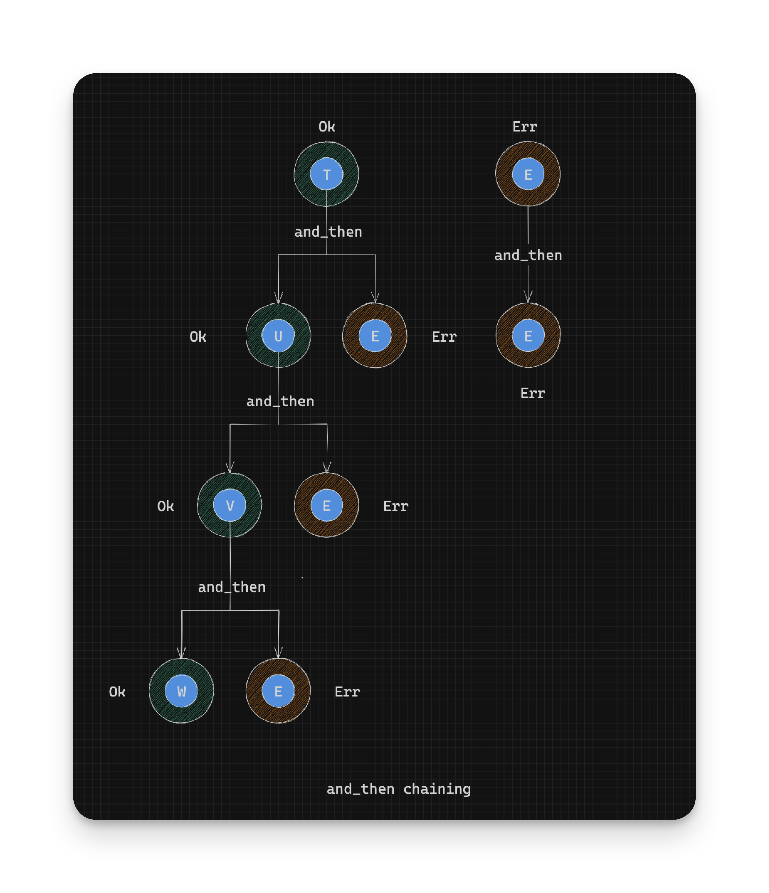
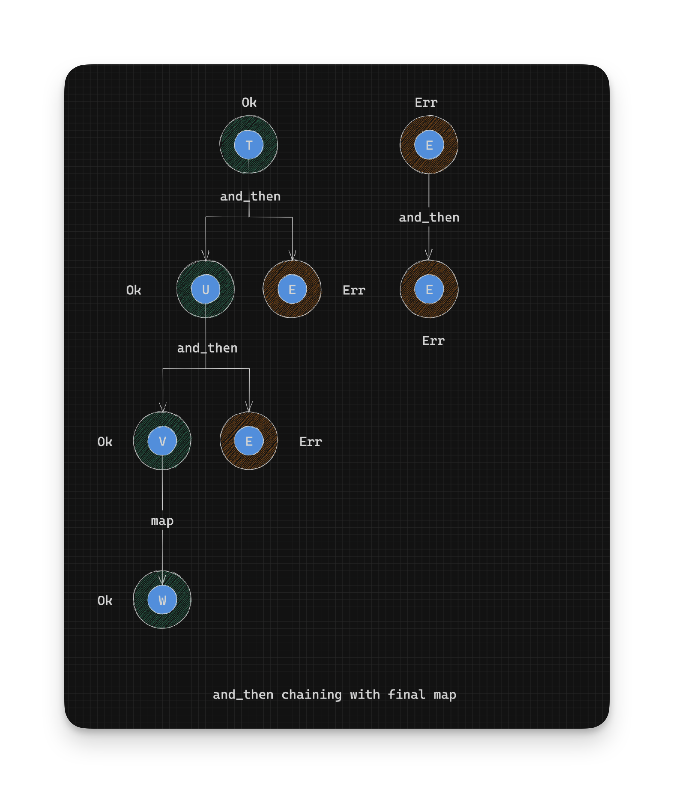

Working With Rust Result - Chaining with Map - Part 7
What if we only wanted to parse two numbers and add them together and not return any errors? We can already solve this with and_then as before:
parse_number("10")
.and_then(|ten| {
// We have successfully parsed "10" into 10.
parse_number("20")
.and_then(|twenty| {
// We have successfully parsed "20" into 20.
Ok(ten + twenty)
})
})
We could also just map over the last function that returns a Result:
parse_number("10")
.and_then(|ten| {
// We have successfully parsed "10" into 10.
parse_number("20")
.map(|twenty| { // We map here
// We have successfully parsed "20" into 20.
ten + twenty // We didn't have to wrap the answer in a Result, because we are 'in' a Result
})
})Reminder about maps definition:
pub fn map<U, F: FnOnce(T) -> U>(self, op: F) -> Result<U, E> {
match self {
Ok(t) => Ok(op(t)),
Err(e) => Err(e),
}
}
mapwraps the result ofopin anOkconstructor for us so we don’t have to!
In summary:
// pseudocode for map
// Given: Result<T, E>
// Return type: Result<U, E>
op: T -> U // Convert success value to a U
Ok(t:T) -> op(t) -> U -> Ok(U) // Return converted value in Ok, as a Result<U, E>
Err(e:E) -> Err(e) // Return existing error as Result<U, E>
How do we decide when to use and_then at the last step of a Result chain or whether to use map?
If you need to make a decision about whether to fail or not, then use
and_thenbecause you can return anOkto succeed or anErrto fail. If you simply want to work on theOkside of a previousResult, then usemap.
This logic works only at the last step of a
Resultchain. If you usemapwhere you should have usedand_then, you will end up with a nestedResultof the sort:Result<Result<T, E>,E>indicating that you should haveand_thened where you had previouslymapped.
So many rules to keep in mind! If only there were an easier way to combine Results.
- Continue on to Combining Results the Question Mark Operator
- Back to TOC